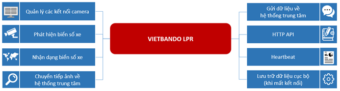

Vietbando LPR là hệ thống sử dụng công nghệ hình ảnh và trí tuệ nhân tạo để tự động nhận dạng và ghi nhận biển số xe trên các phương tiện. Điều này giúp cải thiện tính hiệu quả và độ chính xác trong việc quản lý lưu thông và giao thông, đồng thời tăng khả năng giám sát và kiểm soát trong các hệ thống an ninh và quản lý bãi đỗ xe.
Hệ thống sử dụng các kỹ thuật xử lý hình ảnh để phát hiện và trích xuất biển số xe từ hình ảnh hoặc video. Sau đó, thông qua việc so khớp với cơ sở dữ liệu biển số xe, phần mềm sẽ xác định chính xác biển số và có thể kết hợp với các dữ liệu thêm như thời gian, vị trí và hướng di chuyển để tạo ra thông tin chi tiết và hữu ích.
Vietbando LPR có thể ứng dụng đa dạng các lĩnh vực khác nhau. Trong lĩnh vực giao thông, nó có thể được sử dụng để tự động thu phí trạm BOT, giám sát tình hình giao thông và phát hiện xe vi phạm. Trong an ninh, nó có thể hỗ trợ trong việc theo dõi các phương tiện nghi ngờ, xác minh thông tin về xe và cải thiện quản lý an ninh khu vực. Ngoài ra, trong lĩnh vực quản lý bãi đỗ xe, phần mềm Vietbando LPR giúp tối ưu hóa việc kiểm soát ra vào, tìm kiếm thông tin xe trong thời gian ngắn và tự động ghi nhận sự kiện đỗ xe.
Vietbando LPR là ứng dụng dạng dịch vụ được cài đặt trên một PC, kết nối với camera thông qua giao thức RTSP từ đó phát hiện, nhận dạng và thu thập các biển số xe xuất hiện (đi qua) cùng quan sát của Camera.

Bao gồm các chức năng dùng để tạo kết nối tới camera thông qua giao thức RTSP (Realtime Transport Stream Protocol) và các thông tin liên quan như: độ phân giải, FPS, ….
Bao gồm các chức năng phát hiện biển số xe từ các luồng stream camera, trích các frame hình để phát hiện biển số xe, xác định kích thước biển số xe (hình ảnh).
Bao gồm các chức năng nhận dạng biển số xe với hình ảnh biển số xe đã thu thập được sẽ thông qua chức năng xử lý nhận dạng từ đó đưa ra được chính xác giá trị của biển số (bằng kí tự) và các thông tin thuộc tính kèm theo như màu sắc, …
Bao gồm các chức năng sử dụng kết nối bằng mạng di động (3G/4G/5G) hoặc bằng mạng wifi của thiết bị để gửi các ảnh trích xuất được (chứa biển số xe) để gửi về hệ thống trung tâm từ đó mở ra các thêm cách dịch vụ khác mà hạ tầng, cấu hình của Vietbando LPR không đáp ứng nổi.
Bao gồm các chức năng sử dụng kết nối bằng mạng di động (3G/4G/5G) hoặc bằng mạng wifi của thiết bị để gửi các biển số xe đã thu thập được về hệ thống server tập trung.
Bao gồm tập hợp các giao tiếp thông qua giao thức HTTP được cung cấp để người sử dụng có thể điều khiển được các tính năng của chương trình (không thông qua giao diện) như: kiểm tra các dịch vụ hỗ trợ, kiểm tra hoạt động, bổ sung camera, …
Bao gồm các chức năng kiểm tra tình trạng hoạt động của chương trình trong suốt quá trình vận hành.
Bao gồm các chức năng lưu trữ lại các kết quả biển số xe đã thu thập được, bao gồm ảnh toàn cảnh, giá trị biển số xe đã nhận dạng được, … trong trường hợp mạng kết nối di dộng bị sự cố, chập chờn dẫn tới việc không gửi dữ liệu về hệ thống tập trung được.